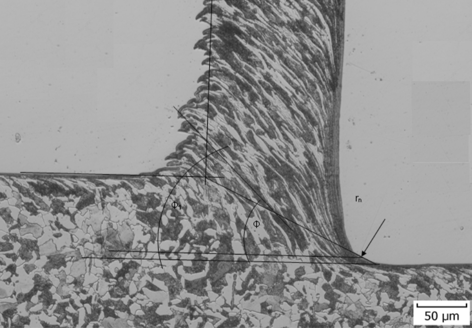
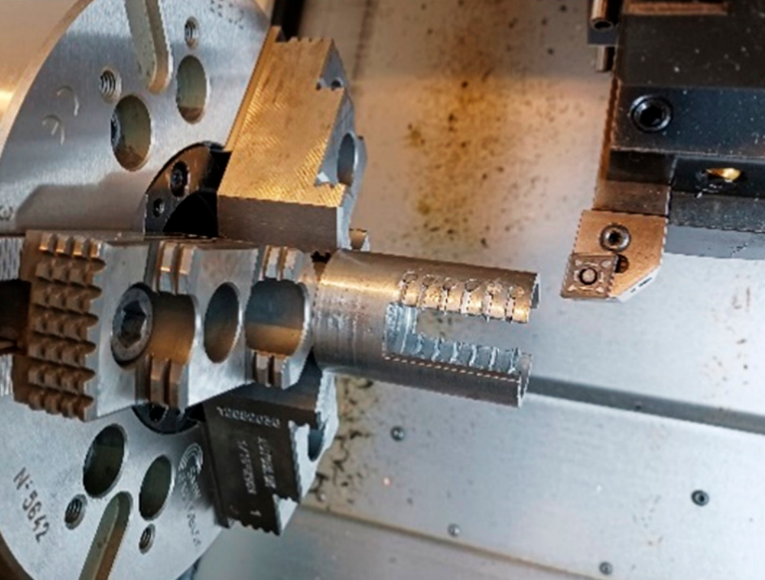
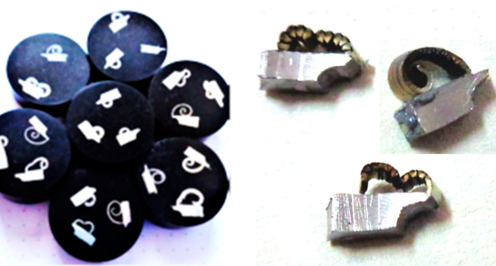
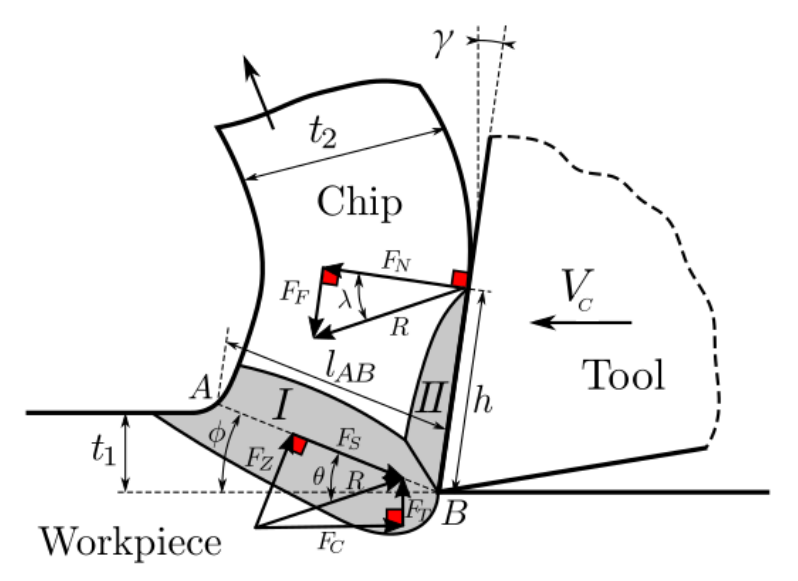
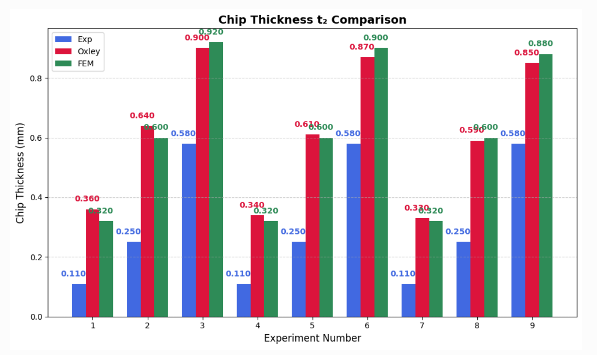
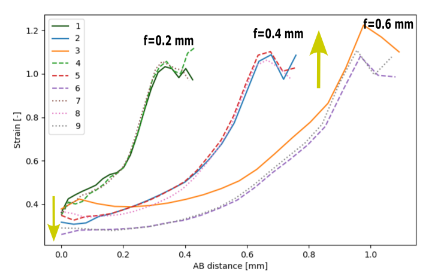

IMAGE: Chip Formation Schematic
Metallographic cross-sections through the orthogonal cutting plane
Methods:
Advantages:
Limitations:
Methods:
Advantages:
Limitations:
Methods:
Advantages:
Limitations:
| Exp. No. | vc (m/min) | f (mm) | φ (°) | ε (-) | K (-) |
|---|---|---|---|---|---|
| 1 | 110 | 0.2 | 37 | 0.681 | 2.010 |
| 2 | 110 | 0.4 | 39 | 0.638 | 1.880 |
| 3 | 110 | 0.6 | 49 | 0.603 | 1.156 |
| 4 | 145 | 0.2 | 37 | 0.650 | 1.560 |
| 5 | 145 | 0.4 | 39 | 0.586 | 1.345 |
| 6 | 145 | 0.6 | 49 | 0.699 | 1.120 |
| 7 | 180 | 0.2 | 37 | 0.331 | 1.348 |
| 8 | 180 | 0.4 | 39 | 0.294 | 1.260 |
| 9 | 180 | 0.6 | 49 | 0.215 | 1.000 |
IMAGE: Orthogonal Cutting Setup
IMAGE: Chip Samples
Oxley Cutting Model
Flow Stress in Primary Zone:
kAB = (1/√3) σy(εAB, ε̇AB, TAB)Equilibrium Conditions:
σN = σN,maxImplementation: Python + LMFIT library
Computation time: <1 second per condition
Johnson-Cook Constitutive Equation:
σy = [A + Bεn] · [1 + C·ln(ε̇/ε̇0)] · [1 - ((T-Tw)/(Tm-Tw))m][Strain Hardening] · [Strain Rate] · [Temperature Softening]
| Parameter | Value | Unit | Description |
|---|---|---|---|
| A | 553.1 | MPa | Yield strength |
| B | 600.8 | MPa | Hardening modulus |
| C | 0.0134 | - | Strain rate sensitivity |
| n | 0.234 | - | Hardening exponent |
| m | 1 | - | Thermal softening exponent |
| ε̇0 | 1 | s-1 | Reference strain rate |
| Tw | 25 | °C | Room temperature |
| Tm | 1460 | °C | Melting temperature |
IMAGE: Flow Stress vs. Strain Graph
Multiple curves showing flow stress at different temperatures:
25°C, 200°C, 400°C, 600°C, 800°C
Demonstrating thermal softening effect
Software: DEFORM 2D
Solver: Implicit Lagrangian
| Exp. No. | Experiment | Oxley Model | FEM Simulation | |||||
|---|---|---|---|---|---|---|---|---|
| φ (°) | ε (-) | t2 (mm) | φ (°) | ε (-) | t2 (mm) | φ (°) | t2 (mm) | |
| 1 | 37 | 0.68 | 0.11 | 31.8 | 0.56 | 0.36 | 29.7 | 0.32 |
| 2 | 39 | 0.64 | 0.25 | 35.3 | 0.53 | 0.64 | 32.9 | 0.60 |
| 3 | 49 | 0.60 | 0.58 | 37.3 | 0.51 | 0.90 | 37.3 | 0.92 |
| 4 | 37 | 0.65 | 0.11 | 33.3 | 0.55 | 0.34 | 30.0 | 0.32 |
| 5 | 39 | 0.59 | 0.25 | 36.7 | 0.51 | 0.61 | 35.1 | 0.60 |
| 6 | 49 | 0.70 | 0.58 | 38.6 | 0.50 | 0.87 | 37.2 | 0.90 |
| 7 | 37 | 0.33 | 0.11 | 34.5 | 0.53 | 0.33 | 32.1 | 0.32 |
| 8 | 39 | 0.29 | 0.25 | 37.8 | 0.51 | 0.59 | 35.0 | 0.60 |
| 9 | 49 | 0.21 | 0.58 | 39.0 | 0.50 | 0.85 | 38.4 | 0.88 |
BAR CHART: Chip Thickness t2 Comparison
VIDEO: FEM Simulation of Shear stress distribution
Strain Dependencies on Shear Plane
Dominates shear plane length
Higher feed → Longer shear plane
0.2 mm: ~0.4 mm | 0.6 mm: ~1.0 mm
Minimal influence on strain distribution
Curves nearly overlap within feed groups
Geometry > Kinematics
Strengths:
Limitations:
Strengths:
Limitations:
FEM reveals non-uniform strain distribution along shear plane, contrary to Oxley's constant strain assumption. Strain increases systematically from free surface toward cutting edge.
FEM predictions closely match experimental results (±5-10%). Oxley provides useful trends with 20-30% deviation in absolute values.
Feed rate dominates strain distribution geometry through shear plane length. Cutting speed has minimal influence on strain distribution patterns.
Constant strain assumption valid only for curved shear plane. Guides selection of modeling approach: Oxley for screening, FEM for critical applications.
Supports improved tool design • Enables process optimization • Foundation for advanced machining strategies
Science Grant Agency – Project VEGA 1/0391/24
Project KEGA 0007STU-4/2025
martin.necpal@stuba.sk
Institute of Production Technologies
Faculty of Materials Science and Technology
Slovak University of Technology in Bratislava
Thank you for your attention!
Questions?